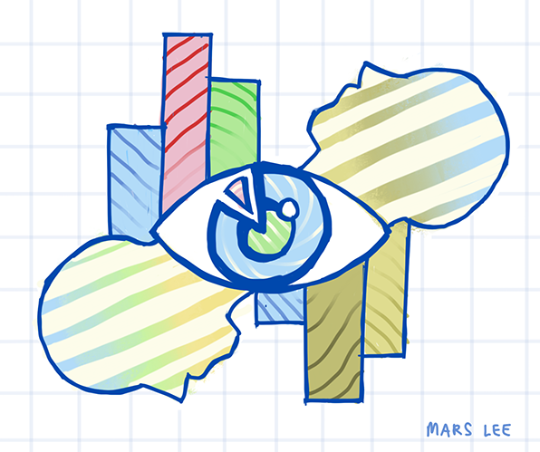
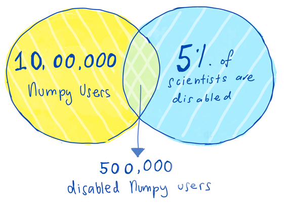
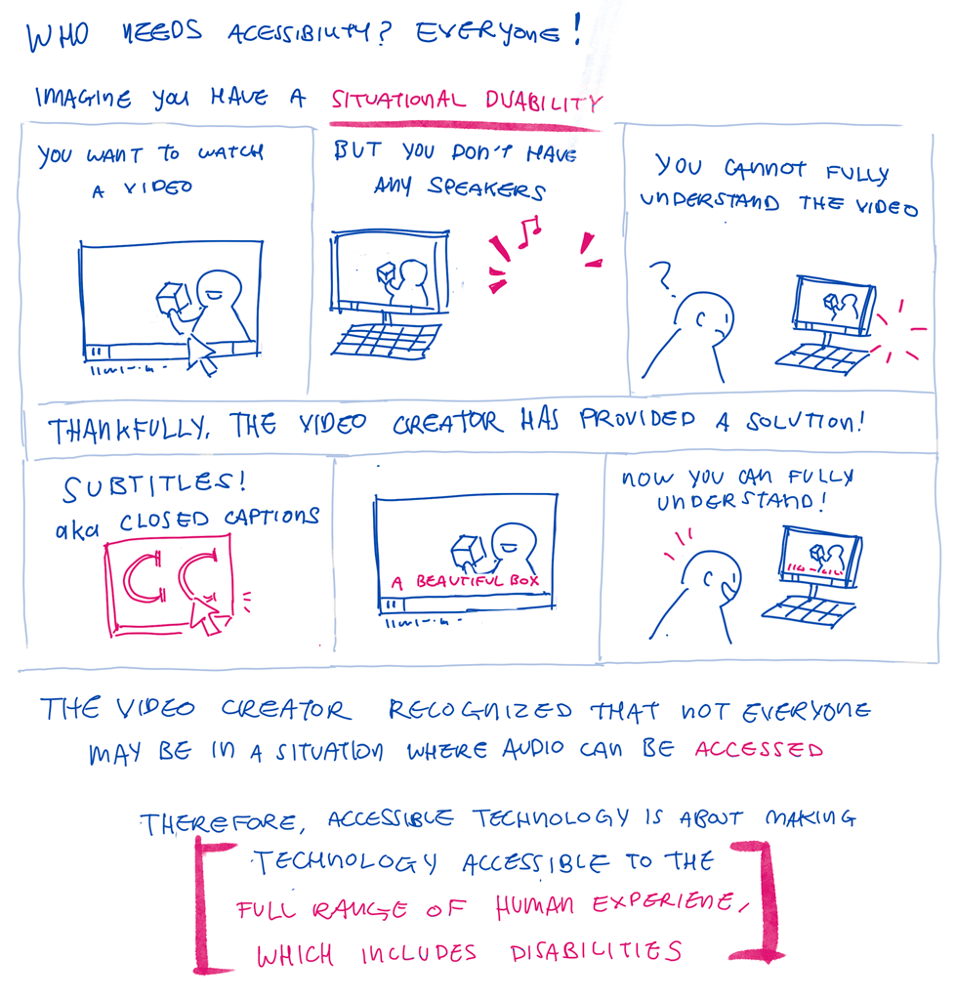
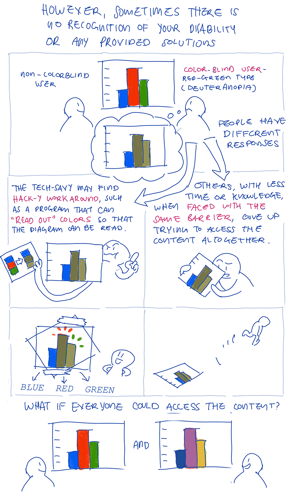
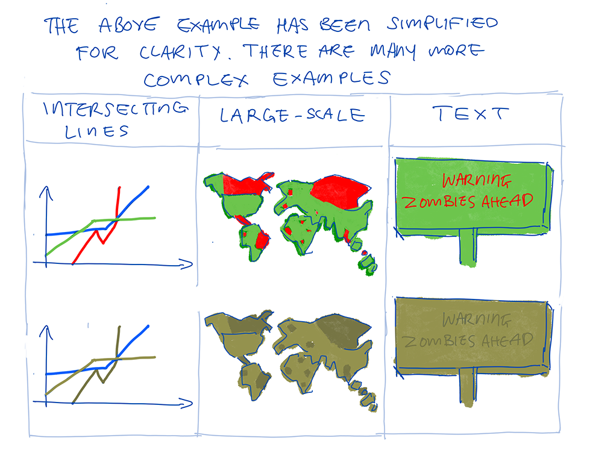
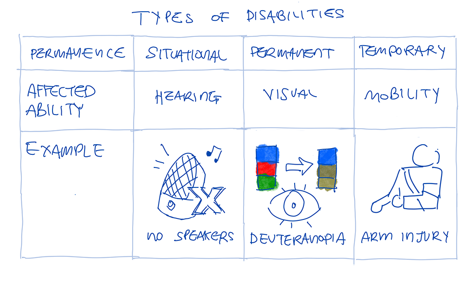
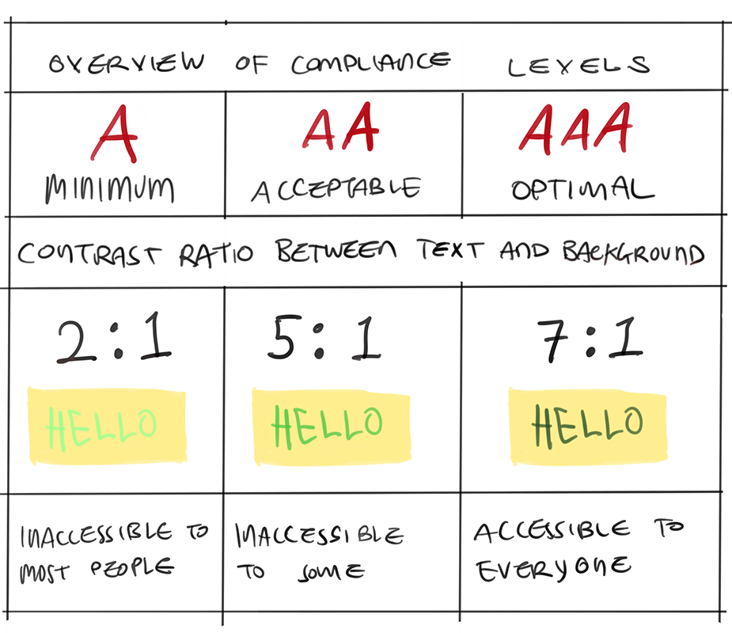
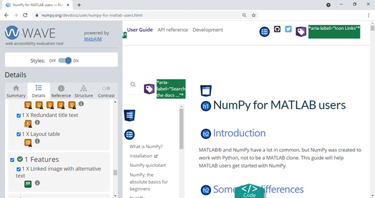

Making Numpy Accessible: Guidelines and Tools
Header illustration by author, Mars Lee
Numpy is now foundational to Python scientific computing. Our efforts reach millions of developers each month. As our user base grows, we recognize that we are neglecting the disabled community by not having our website and documentation up to modern accessibility standards.

As NumPy is early in the dependency chain, it has a huge install base. It is estimated that there are 10 million users of NumPy. Around 15% of the general human population disabled. (World Health Organization). Even if we assume that the rate of disabled scientists is less than 15%(National Science Foundation), such as 5%, that would still put the number of NumPy users with a disability at 500,000. Half a million users deserve an accessible NumPy website and documentation.
In response to this, a small team started working on making NumPy more accessible, specifically its website and documentation. They weren’t experts in accessible technology. In fact, they feared that they didn’t know enough. Yet they strongly believed that accessible technology is a right every person should access and that NumPy could be accessible too.
This small team started with Melissa Weber Mendonça and me, Mars Lee. Our previous skills and projects varied from working on documentation, front-end code, grant-writing, community work, software maintenance, and consulting work.
We were very inspired by JupyterLab's strides forward in accessibility this year. In the open-source ecosystem, accessibility is often considered low-priority, scary or someone else’s job. If JupyterLab could do it, so could NumPy. We decided to take this on.
Making NumPy accessible is something that should have started a long time ago. However it never quite started, mostly due to a lack of knowledge. Not everyone knows what accessible technology is, who it benefits, what guidelines to use or how to implement them. With all these gaps in knowledge, it can be intimidating to even start this conversation.
This blog post is the first in a series of three, as accessibility is a big topic. Additionally, a note on terminology- the terms ‘users with a disability’ and ‘disabled user’ are used interchangeably, and some people may prefer one term over the other.
Who needs accessibility?
External link to the above illustration's full transcription
{kind=link}
First, who needs accessibility? Your first answer might be ‘people with disabilities’ but ultimately everyone benefits from having accessible technology.
This is because accessibility is about making technology accessible to the full range of human experience. Disabilities can affect sight, hearing, cognition and physical motion.
Through this lens, we’ve all been at least situationally disabled. We’ve all been to websites with small, hard to read text. Maybe you’ve had a broken mouse and could only navigate through the keyboard. Or needed to watch a video but had no working speakers.
We have felt the frustration of the world not working the way you need it to. We have felt relief in finding commonly built-in solutions, such as increasing our browsers' text size, turning on captions or learning to switch tabs with keyboard shortcuts.
External link to the above illustration's full transcription
{kind=link}
External link to the above illustration's full transcription
{kind=link}
Yet sometimes there seems to be no recognition of our disability nor any obvious solutions. A color-blind user may not be able to read a scientific diagram due to its red-green color scheme. The more tech-savvy of us may find hack-y workarounds, such as downloading a browser extension that adjusts our monitor colors so that the diagram can be read. Others with less time or knowledge, when faced with the same wall, give up trying to access this content altogether.
External link to the above illustration's full transcription
{kind=link}
Disabilities are not just permanent- there are also temporary and situational disabilities. (W3, Web Accessibility Initiative). In this blog post, the examples focus on visual disabilities, but much more different types of disabilities that affect one’s experience with technology (W3)
If we can understand these struggles, then we can understand what people with disabilities face everyday. We can extend that relief, that exhilarating feeling of ‘A-ha, yes, I can use this!’ to everyone by making technology more accessible.
Starting with Guidelines
We began our journey by referring to the guidelines set by W3, the Web Accessibility Initiative, the main international standards organization for the Internet.
There are three ‘levels’ we can achieve in each area. This example below details the levels of compliance for color-contrast, which helps people with visual disabilities.
External link to the above illustration's full transcription
{kind=link}
In this example, visual contrast is something that can be rather easily fixed by changing the color of the text. This is just one guideline: there are many more guidelines such as more accessible images and audio. However, these ‘low-hanging fruit’ styling fixes seemed like a good place to start.
Determined but piece-meal beginnings
Using these guidelines, we started by reviewing the website and documentation in a determined but ultimately piece-meal approach. We started with the ‘WAVE Web Accessibility Evaluation Tool’. It is a free browser extension that scans a page and categorizes shortcomings based on the above mentioned W3 guidelines. We aimed to fix specific issues, such as creating more color contrast between the text and background and adding alt-text, specifically for the many mathematical graphs.

Unfortunately, there was no way to review multiple pages at the same time with the WAVE tool’s free plan. There are several hundred pages in the NumPy documentation and when converted to print, it is equivalent to nearly 2000 physical paper pages. Going through each page of documentation individually would be daunting and time-consuming.
We also tried combining the automated WAVE tool with real human feedback. We reviewed pre-existing Github issues in the NumPy.org repository tagged with ‘Accessibility’. However, this still missed many problems, since it was dependent if a user created an issue in the first place.
It felt like a frantic game of Whack-A-Mole, where once we fixed one problem, dozens more would become apparent. The logical next step would be to scale up. We considered paying for an audit so that the whole NumPy site and documentation could be reviewed at once by experts.
Now that we understood why we should care about accessibility, the different types of disabilities, guidelines and basic tools, we thought this next step would be easy. However, it isn’t as straightforward as we thought.
Stay tuned! The next blog post in this series will talk about what types of audits we considered, the shortcomings of our method and getting help from other people making open-source projects more accessible.
All illustrations in this post have been illustrated by Mars Lee
Comments